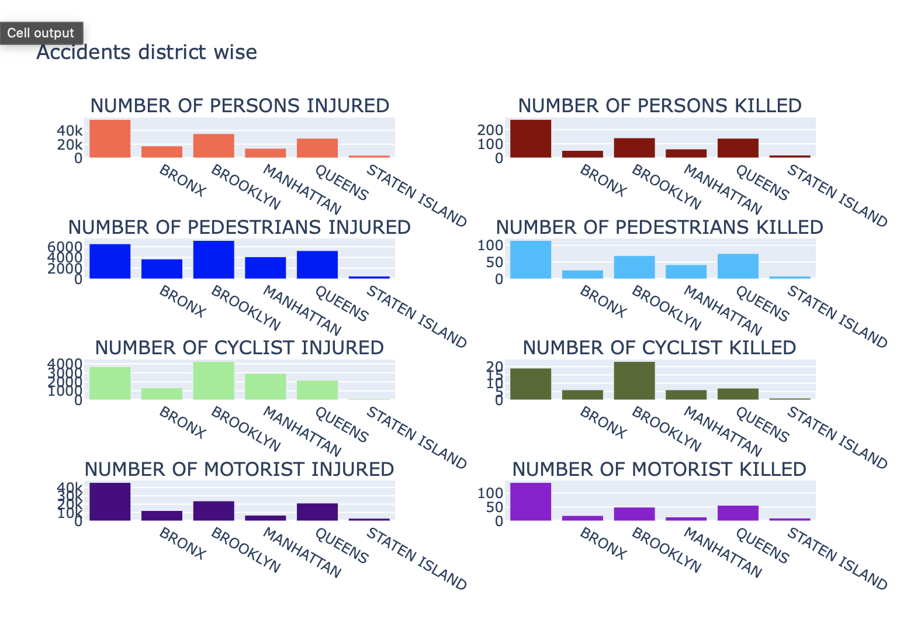

Data Analysis
Now that you know how we processed the data, you are ready to navigate through the data on Motor Vehicle Crashes.
This is best done by hovering over plots and exploring the interactive visualizations.
Through this page, you can investigate the temporal patterns of the data-
to explore the number of accidents by day of the week, hour of the day, month, and hour of the week and year.
Then you will learn about the Geographical patterns of the data to see the distribution of the accidents across different regions
in the city on a heatmap.
You will also learn about the accidents across districts in terms of how many people died, people injured, motorists died, motorists injured,
pedestrians died, pedestrians injured,
cyclists died, and cyclists injured. We further provide an interactable visualization to explore the death and injury tolls on the district.
Finally you will investigate the Predictive Model using accident data.
Here you can look into the temporal patterns of the data to investigate questions like:
- At which days during the week do accidents happen the most?
- What hour of day people is most accident prone?
- Is there a month or season where accidents happen more?
- Has there been a change from 2018-2020? Has Covid-19 led to reduced accidents?
Hourly Patterns
Use the following plot to investigate how many accidents happen in New York city over hour of day
The plot is a histogram showing the hours of day on the x-axis
corresonds to number of accidents on y-axis.
The visualization above reveals some interesting results and reaffirms a lot of what we were expecting.
The accidents number is low in the night hours except a minor peak at midnight. This is probably because of
people sleeping and less people being on roads. Also it can be seen that the hours of 16-17 have the global peak,
where most accidents happen in the day. This could be due to several reasons- peak traffic times , tiredness after a
long day, more rushing to home mentality etc. We also found that contrary to popular beliefs, night driving is generally
much safer than day driving as
less accidents happen in the night hours, probably due to less people on the roads.
Weekly Patterns
Now we want to explore the accident count based on a weekly time scale. The plot bellow will be showing
the days of the week on the x-axis corresponds to number of accidents on y-axis.
Here we clearly see that accidents happen less on the weekends. The accidents number are pretty consistent from Monday to Thursday but peak in the week on Friday. Our theory is that this is probably because people are most rushed on this day to get to home from work.
If this is true, then we should see more accidents happening on Fridays during 15-17 in the week.
In order to test our theory and further find some more weekly
patterns. We split the week into 168 hours, starting from 00:00
on Monday as hour 0 and ending with midnight on Sunday.
Lets loook at the accident count by hour of the week:
Based on the histogram above showing Hour of week on x-axis and accidents number on y-axis we do see a
peak of 5966 accidents in the 112 hour of the week which comes to be 16h on Friday.
The second maximum is on Friday to at 17h with 5924 accidents. The third maximum is on Thurday at 17 h with 5812 accidents followed
by Thursday at 16h aith 5733 accidents.
These results indicate that Friday evenings are most dangerous times to drive between 16-18
followed by any working day betweeen the same hours. This indicates that people should be especially
careful when on the road and show more patience especially on Fridays. The lack of patience and accident
number is due to high traffic volumes but this reiterates the greater need to especially be calm when under stress.
Monthly Patterns
Now, we enlarge the time-perspective a bit and look at the monthly and seasonal patterns. We want to address the question of whether the month/season has an impact on how many accidents are there chooses to bicycle. To analyze this,
lets first look at the number of accidents over the month of the year.
This visualization shows differences between accidents based on month. Most accidents happen in January. There is a slight dip in Februrary but that could also be because the number of days are less in Februrary. There is a significant dip in April which is suprising. Also the end of the year November and December has less accidents. This could be because of less people driving in the snow in the winters.
Lets look at the accident count by week of year to look deeper into the monthly patterns:
From the visualization, it appears that the last two weeks in December are verry low for accidents. This could be because of the holiday season and people being happy and relaxed and more considerate of other drivers. The last week of the year has the lowest accidents by far which could additionally because of people being at home with their families and less traffic on roads.
We also observe peaks starting the 1st week of January and peaking around mid january. This could be a result of people being more ambitious towards their new year goals and more rushed apart from other reasons.
The most suprising is the dip around week 13-15. This could be attributed to spring and Easter holidays. Another thing that might be skewing numbers for April is the strict lockdown announced in April 2020 due to the COVID-19 virus. To investigate this further we will look at yearly patterns in the next section.
Yearly Patterns
Finally we want to investigate whether there seem to
be any patterns in how many accidents are there over the years.
Here we are keen to look at the effect of COVID-19 and the lockdown
on the number of accidents that happened and the contrast with
non-lockdown years. For this we first visualize the number of
accidents over the three years to see if can see any pattern.
From the plot we observe that there was a decrerase in the number of accidents going from 2018 to 2019 which is due to a general increase in road safety over years. Unsuprisingly 2020, saw a huge drop with the number of accidents almost falling to half. This was probably due to the COVID-19 pandemic and people staying and working from home and the lockdowns.
Lets investigate further by looking at monthly patterns over years:
There is a lot to unpack in the plot above. Firstly we can see that 2020-the COVID year has relatively low activity over the entire year in comparison to the other two years. Secondly its importnat to note how there is always a dip in the number of accidents for April which is suprising. This could be attributed to Easter Holidays but we are not sure. Thirdly, Februrary sees a dip probably due to lower number of days except in 2020 when the effect of lockdown in March has reduced the accident numbers. Lastly, and most importantly, there is a trend of general decrease in the number of accidents month over month which is a good sign meaning people are getting more aware of road safety.
Finally, lets look at the number of accidents over week over years to better see weekly deviations in accident patterns over these three years in New York:
From the above plot, firstly we would like to point out the dip starting around week 12 and dropping completely in in week 15 in 2020. Thats around end of March and April. This was the time the details about the new virus were coming out and lockdowns were being imposed so this is good the effect is seen in the data as well.
Secondly,we see a peak around week 25-26 which is about in June when the weather is good and more people are out on the roads. Even during the pandemic year higher levels of activity can be seen in the summer months.
Lastly we observe a dip in December which is probably due to the holiday season. From these visualization, it seems like holidays is a good time for road safety. This is probably due to more relaxed state of minds and a higher than usual desire to get to your loved ones safely.
In this part of the data analysis, we'll look into the geographical patterns of the data in New York to investigate questions like:
- Are there certain locations more likely to have accidents?
- Are there certain boroughs more likely to have accident?
- Do cyclist die/injured more in some boroughs?
- Do motorist die/injured more in some boroughs?
- Are pedestrians killed/injured more in some boroughs?
For the purpose of answering these questions, we will use a heat map to look at a distribution of
the accidents across different regions in the city . After that we will look at the accidents across districts in terms
of how many people died, people injured, motorist died, motorist injured, pedestrian died, pedestrian injured, cyclist died and cyclist injured.
We further provide a interactable visualization to explore the districts on their death and injury tolls.
Distribution of accidents based on location.
Here we want to see where do accidents happen in NewYork city if we forget the dimension of time for a bit
From the visualisation above, it can seen that most accidents happen in Manhattan. This is probably due to higher population density,
more work places, more tourists, condensed housing and rasher driving due to more traffic.
As you move away from the city centre, the accident density is dropping as well on account of cars and population densities.
Let's further look at district wise analysis in the next section to look deeper into the accident details of different regions.
District Wise Accidents Analysis
In this section, we wanted to compare the different boroughs of New York to see how
they are doing in terms of how many people died, people injured, motorist died, motorist injured,
pedestrian died, pedestrian injured, cyclist died and cyclist injured. This would help identify the right infrastructure
to improve and the right safety measures to implement through additional signs and campaigns targeted based on user and mode of transport.
Lets look at the visualization for the districts to better understand this question:

From the plot above, it can be seen that Brooklyn has higher numbers of persons injured. Queens has a higher number
of pedestrians killed which is making it the leading district in people killed followed by Brooklyn. Brooklyn has a
higher number of cyclist killed, motorist killed and motorist injured followed by Queens. Brooklyn leads in cyclist injured
followed by Manhattan and Queens. In pedestrians injured, Brooklyn leads as well followed by Queens and Manhattan.
From these observations, more measures need to implemented in Brooklyn for road safety for pedestrians, motorist
and cyclists in general. Queens needs to seriously need to look into pedestrian safety followed by measures in areas
of cyclist and motorist safety as well. Manhattan, though crowded, is still relastively safer but new measures need to
implemented to combat harm to cyclist and pedestrians.
Further in the next visualization, we provide you an interative visualization based on choice of mode of transport.
In this section we want to predict the number of people killed.
By using the accident data along with temporal information, we can hopefully gain a deeper
understanding as to what, if any, role the time plays in accident patterns. First we will do a
time series analysis where we would try to predict future crashes to umber of crashes happening per
day for a particular year helps us to identify the occurence of crashes & time factors like (day of week, hour
,season,etc) helps in analysing the behaviour of crashes with respect to time. In this section, we tried to built
a machine learning regression model
for predicting the crashes occuring per day per hour for forecasting in the future also.
Time Series Analysis
The analysis of number of crashes happening per day for a particular year helps us to identify the occurence of crashes & time factors like (day of week, hour ,season,etc) helps in analysing the behaviour of crashes with respect to time.
In this section, we tried to built a machine learning regression model for predicting the crashes occuring
per day per hour for forecasting in the future also.
Initially the data required for time series must be made from original data by extracting time features from the original data followed by creation of crashes/hr (count of crash occured on a particular day in an hour) which is the target variable for prediction which is done in the following steps.
On the left side, the Quantile-Quantile (Q-Q) plots display the predicted over the observed values, the ones on the right overlay the predicted crashes with the observed ones over time. The performance of the XGboost model can be assessed more with the help of these plots which reflect the scores obtained in the previous part In the next section, cross validation process is followed to increase the robustness of the prediction models and determine other features that could improve it.
Adding Weather data features
Inorder to make prediction model more generic, data of weather features for the year 2018 has been incorporated with the data to make it more generic with addition of weather features like - ('Temperature', 'Precipitation', 'Snow','Snow Depth', 'Wind Speed', 'Wind Direction','Visibility','Cloud Cover', 'Relative Humidity')
On the left side, the Quantile-Quantile (Q-Q) plots display the predicted over the observed values, the ones on the right overlay the predicted crashes with the observed ones over time. Here Random Forest model is used and its performance can be assessed more with the help of these plots which reflect the scores obtained in the previous part with addition of weather features inorder to make the model more general problem.